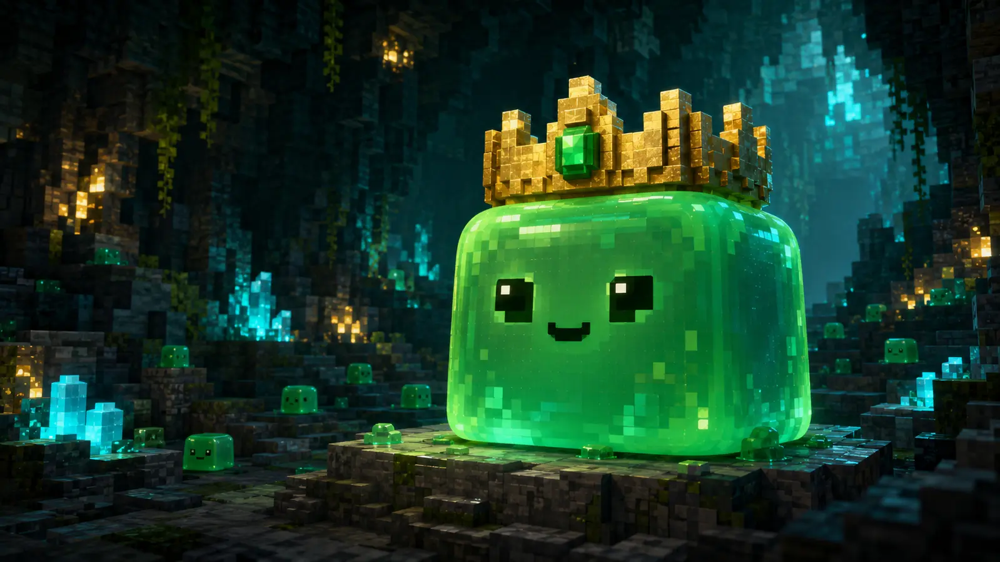

全100階層を予定
深層は、まだ霧の中。
浅層から中層へ向けて制作中
階層ごとの地形、敵、発見できるものを少しずつ組み上げています。 序盤の土台は進み、現在はさらに奥へ進んだ時の変化を調整中です。 どこで何が待っているかは、遊んでからのお楽しみ。
Development Roadmap
森で暮らし、育て、奥へ進む。
牧場生活を中心に、採掘・探索・釣り・住人との暮らしをひとつの世界へ。 ここではネタバレを避けながら、開発中の様子を少しだけ公開します。

このページの数値は、ネタバレを避けるための大まかな公開用目安です。 実際の開発順や内容は、調整によって前後することがあります。
基本システムは少しずつ形になっています。現在は、それぞれを同じ世界の中で 自然につなげる作業と、遊び心地の調整を進めています。
浅層から中層へ向けて制作中
階層ごとの地形、敵、発見できるものを少しずつ組み上げています。 序盤の土台は進み、現在はさらに奥へ進んだ時の変化を調整中です。 どこで何が待っているかは、遊んでからのお楽しみ。
作物を育てる基本の流れは形になりつつあります。 土づくりや道具の成長など、長く遊べる手触りを調整しています。
投げる、待つ、釣り上げる流れを制作中です。 場所や季節による違いと、たまに出会える何かを静かに増やしています。
お世話の基本部分を組み立てながら、種類ごとの行動を調整中です。 毎日の変化がきちんと感じられる仕組みを目指しています。
出荷やお金の流れは、少しずつ遊べる形になっています。 住人との暮らしや季節ごとの変化は、これからさらに広がる予定です。
一日の空気や季節感を作り込んでいます。 天気が暮らしにどう関わるかは、遊びを邪魔しすぎないよう慎重に調整中です。
家具や灯り、生活に使う設備をひとつずつ接続しています。 便利になるほど準備も必要になる、ほどよい生活感を目指しています。
農業、道具、お金など、毎日の中心になる部分。
採掘場や森など、足を運ぶほど変化する場所。
釣り、動物、住人、家の設備をひとつの暮らしへ。
バランス、負荷、複数人で遊ぶ時の調整。
公開時期と未発表の内容は、まだ秘密です。
進捗はこのページで、ネタバレにならない範囲から少しずつ更新していきます。